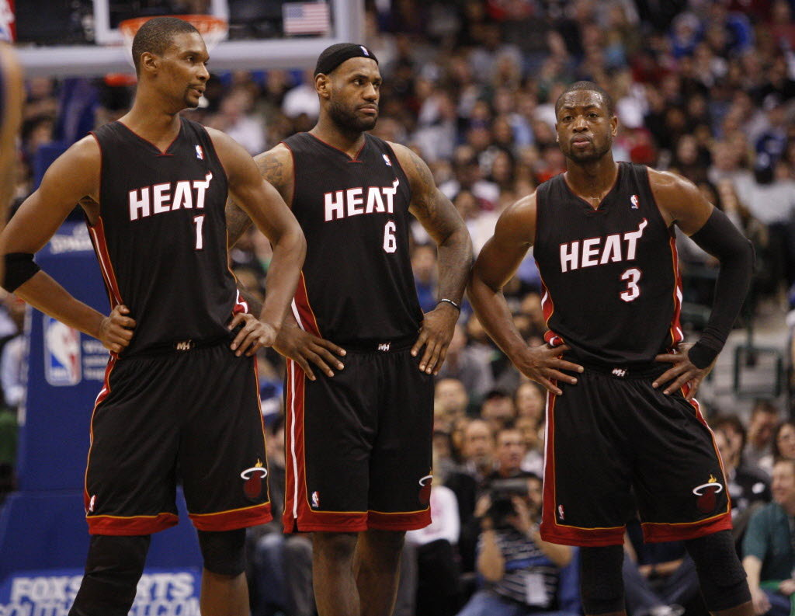
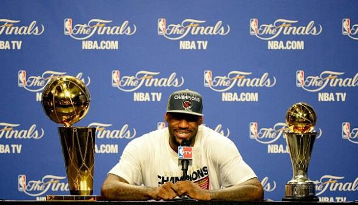

Après un été 2010 très mouvementé suite à la décision de Lebron James qui a fait le tour de la planète("The decision") entre polémique, hype, injustice cette décision a fait le buzz! Cette décision est la suivante: la saison suivante Lebron James ne portera pas le maillot des Clevland Cavaliers son équipe de toujours, pour aller jouer à Miami et rejoindre un big three composé de Dwayne Wade et Chris Bosh. "The Decision" fut très mal prise par les fans de Clevland, une sorte de trahison, ainsi ils brulèrent les maillots du joueur far de la franchise depuis sa draft en 2003. Pour cette première saison sous l'oeil des médias il fini la saison avec 26,7 points, 7,5 rebonds et 7 passes décisives en moyenne par match. De plus lors de la saison il signe une grosse performance contre son ancienne équipe avec 38 points marqués en un match. Le Heat de Miami se qualifia facilement en playoff et rencontra les Celtics de Boston en finale de conférence Est: la bête noir de Lebron James à l'époque. Cette année la Lebron James et son équipe effacère les Celtics en 5 matchs terminant par un buzzer de Lebron James et une scène très émouvante où il pleure genoux à terre après avoir surmonté la même équipe qui a deux reprise l'avait empêcher d'atteindre son objectif. Malheureusement cette année ne fut pas la bonne comme en 2006 Lebron perdi en fianle mais cette fois ci contre les Maverics de Dallas. Lebron James connaît un véritable passage à vide sur toute la série avec seulement 17,8 points en moyenne par match: une moyenne faible comparé à ce qu'il fait d'habitude.

La saison suivante(20011-2012) est spéciale, en effet, un lock out est effectué durant la saison. Il termine la saison avec 27,1 points, 7,9 rebonds, 6,2 passes décisives ainsi que 1,9 interceptions et 53% de réussite au shoot. De ce fait il est nommé MVp de la saison régulière pour la 3 eme fois de sa carrière. Bien évidemmment Lebron et ses coéquipiers se qualifient pour les playoffs passe le premier tour facilement mais ils perdent Chris Bosh suite a une petite blessure dans la série contre Indiana où ils menaient 2-1. Pour le game 4 Lebron James montre que c'est bien le MVP de la saison et souhaite faire oublié sa contre performance en final l'année passé, il inscrit 40 points, prend 18 rebonds et fait 9 passes décisives en un seul match: c'est tout simplement impressionant. Finalement le Heat de Miami se qualifièrent et se confronteraient donc au Boston Celtics en finale de conférence Est. Comme l'année dernière les matchs sont d'une intensité folle mais comme l'année dernière Lebron James et ses coéquipiers gagnèrent la série. Lebron James contribua énormément à la victoire dans le match 6 avec 45 points et 15 rebonds. Pour la deuxième année consécutive le Heat se qualifie en finale NBA, cette année c'est contre le Thunder d'Oklaoma: une équipé bourré de jeunes talents qui participent à leur première finale NBA. Lebron James et ses coéquipers défirent le Thunder et furent sacré champion de NBA, Lebron James fut élu à l'hunaniomité MVP des finales notamment grâce à son triple double dans le match 5 et des stats impressionantes(28,6 points , 10,2 rebonds et 7,4 passes décisives en moyenne par match). De plus le nouveau champion fini son parcours en playoff avec 30,3 points, 9,7 rebonds et 5,6 passes décisives par match.

Lors de la saison 2012-2013 Lebron James n'est toujours pas redescendu de son nuage des playoffs de la saison précedente. En effet, en janvier il tourne 29,7 points , 7,8 passes décisives et enchaîne une série de 27 victoires avec le Heat la 3 eme plus longue de l'histoire en NBA. Son équipe fini la saison avec le meilleur bilan de la ligue: 66 victoires et 16 défaites. Il est élu MVP de la saison régumière pour la 4 ème fois et il manque de peut d'être élu à l'hunanimité ce qui aurait été une première en NBA. Ses stats cette saison là son toujours très impressionante: 26,8 points, 8 rebonds, 7,3 passes décisives, 1,6 interceptions et 56,5% de réussite au shoot par match en moyenne.
Une fois de plus le Heat se qualifie en playoff et passes facilement les deux premiers tours de playoff. Cette année en finale de conférence Lebron James rencontre les Pacers d'Indiana et d'un dénommé Paul George. La série s'annonce dantesque et dès le match 1 Lebron James marque un buzzer beater pour emporter le match de 1 point, voici l'extrait:
Après s'être détaché des Pacers au cours d'une série compliqué, le Heat de Lebron James affronte les Spurs de San Antonio. Une équipe très complète et basé sur le collectif avec à sa tête Greg Popovich un coach mondialement reconnu. Cette série est une revanche de la finbale perdu 6 ans aupparavant pour le MVP de la saison. Après une entrée en matière compliqué le Heat est menée 2-3 lors du match 6 Lebron James enregistre son deuxième triple double de la série et compte sur un shoot démentielle de Ray Allen pour s'offrir un match 7. Lors de ce match 7 qui sigifie la consécration si ils gagnent ou un coup au morale si ils perdent. Heureusement pour eux cette année il remporte le titre de champion NBA et Lebron James est nommé MVP des fianles pour la deuxième année consécutive avec 25.3 points, 10.9 rebonds, 7 passes décisives et 2.3 interceptions de moyenne par match